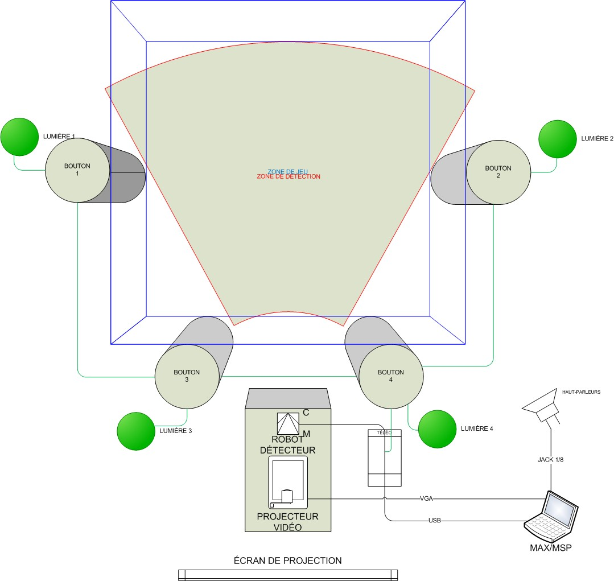

Sans Coeur Circuit (2005)
Playful interactive installation co-created with Sophie Chabot, Olivier Lalonde, and Renaud Granda. Players switch off lights by pressing spatially distributed buttons while avoiding a moving laser tracked by sonic detection.
